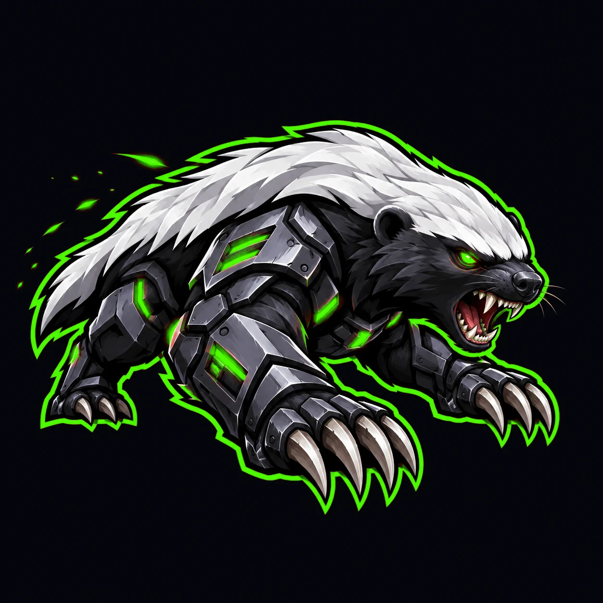
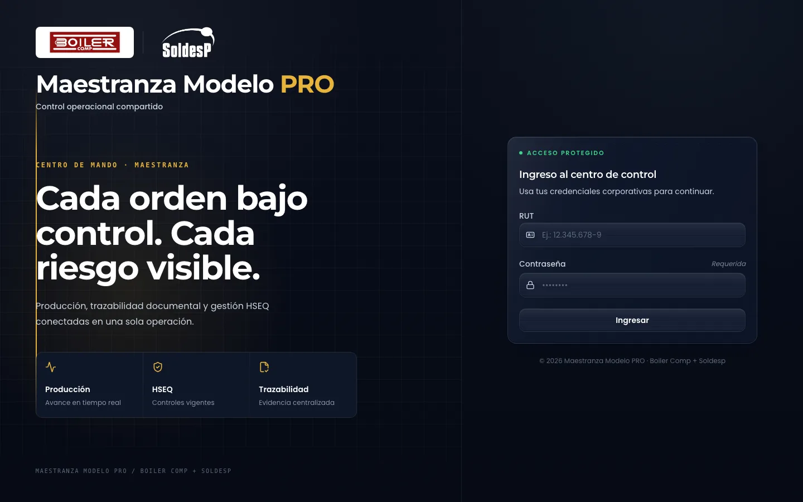
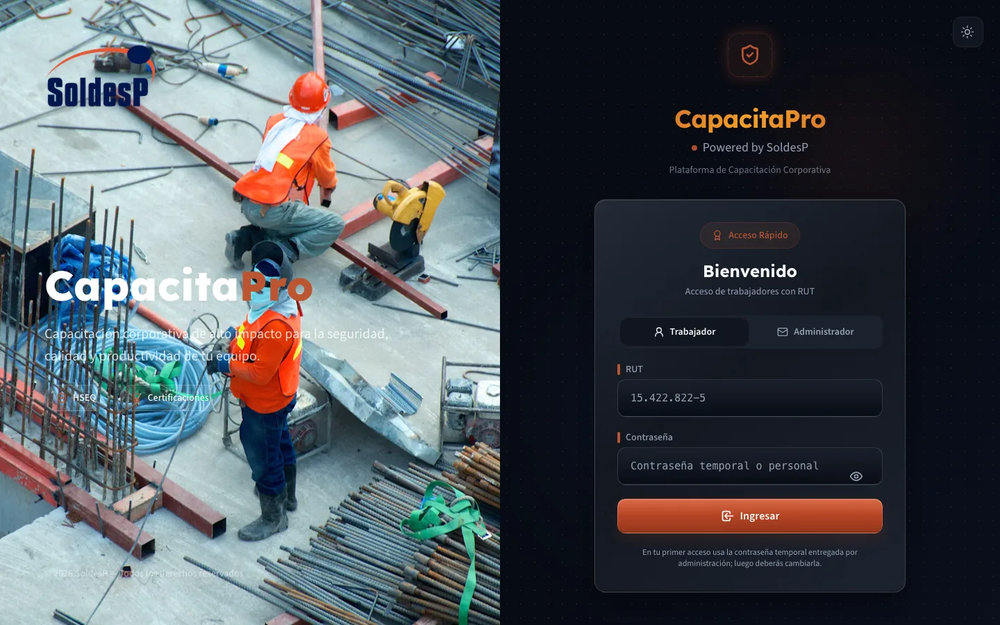
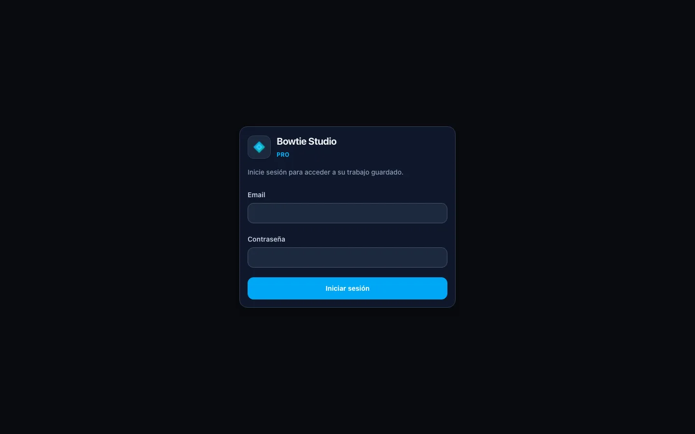

Automatización con garras: RPA, IA e integraciones que corren solas.

Servicios
Lo que ofrecen las agencias de IA líderes, aterrizado a operación industrial.
Diagnóstico y hoja de ruta
Mapeamos tus procesos y elegimos dónde la IA paga primero.
El primer paso de todo proyecto.
Agentes de IA a medida
Agentes que leen, deciden y actúan dentro de tus sistemas.
Construido antes: AgentesIA.
Automatización e integraciones
Flujos con n8n, RPA y API entre ERP, correo y portales.
Construido antes: LicitApp Pro.
Documentos con IA
Extraer, validar y clasificar contratos, PDF y formularios.
Construido antes: Docusentinel Pro, DocPresupuestoAI.
Estimación y licitaciones
Modelos que estiman obras y priorizan riesgos de licitación.
Construido antes: Mintral, Presto Advance Risk.
Plataformas HSEQ y operación
Software de seguridad, calidad y control para faena.
Construido antes: Maestranza Modelo PRO, Bowtie Studio Pro.
Cartera
Productos en línea, construidos por el equipo fundador.

Maestranza Modelo PRO
Producción, trazabilidad documental y gestión HSEQ en una sola operación.
Abrir la app

Más proyectos en GitHub.
Cuatro capas, un solo flujo
Activa cada capa y mira qué parte del proceso toma.
Recibir
Correo, portal o formulario.
Leer
Extrae datos de PDF e imágenes.
Validar
Cruza contra reglas y maestros.
Registrar
Escribe en el ERP sin digitar.
Avisar
Escala solo las excepciones.
Auditar
Deja traza de cada paso.
Cómo trabajamos
Por etapas: cada una se cierra con algo funcionando.
Diagnóstico
Procesos, datos y sistemas, tal como están hoy.
Prueba de concepto
Un tramo real automatizado, medido contra la línea base.
Construcción
A producción, integrado y con permisos claros.
Operación
Monitoreo, ajustes y un dueño en tu equipo.
¿Qué proceso te quita el sueño?
- Correo
- correo por definir
- Teléfono
- teléfono por definir